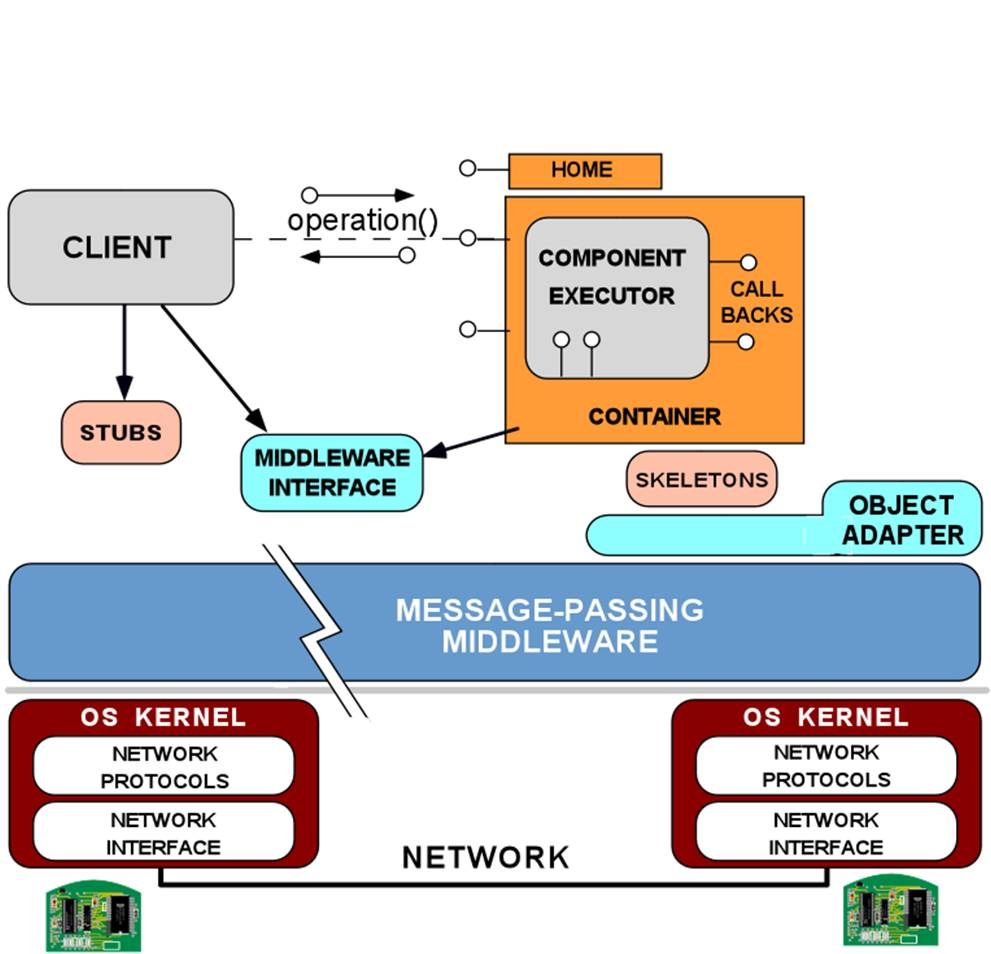

Ogni prodotto software è intrinsecamente legato a una piattaforma di esecuzione,
capace di comprendere ed eseguire il linguaggio in cui il software è espresso.
La piattaforma di esecuzione è quasi sempre un ulteriore prodotto software
(ad esempio J2EE [J2EE], .NET [.NET]
che si basa a sua volta su una gerarchia di prodotti software
(JVM [JVM], CLR [CLR], il sistema operativo, etc.) fino a giungere
alla piattaforma fisica costituita dall'hardware dell'elaboratore.
In questa organizzazione a livelli, ogni livello supporta una collezione
diversa di astrazioni la cui granularità tende a crescere dal basso verso
l'alto mentre l'applicabilità (
scope) tende a descrescere.
Ad esempio, la piattforma
J2EE fornisce astrazioni per lo sviluppo
di business applications ed ha scope pià ristretto rispetto a Java
J2SE
[J2SE] su cui si poggia.
| |
Figure 1. Gerarchia di piattaforme

|
|
Le piattaforme di alto livello permettono di affrontare
la risoluzione di un problema fissando un punto di partenza più vicino
al dominio applicativo, riducendo l'
abstraction gap
con il livello di astrazione del problema.
Un'astrazione supportata da una piattaforma può essere vista
come una soluzione preconfezionata
a una famiglia di sotto-problemi comuni e correlati e
può essere usata assieme ad altre astrazioni per risolvere
in modo completo o parziale altri problemi nel dominio.